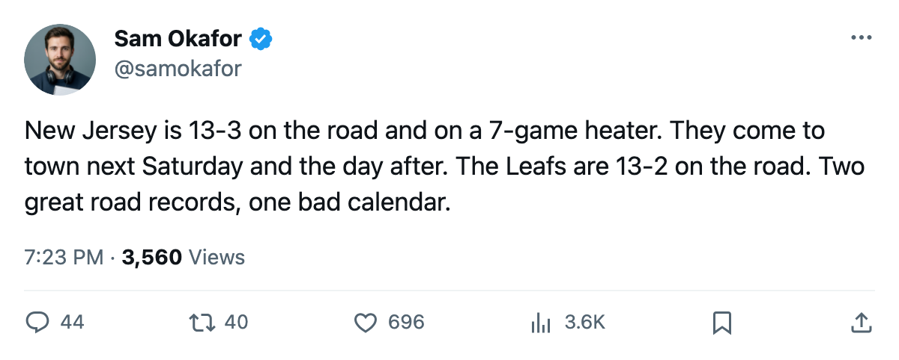

Week Ahead: Vancouver on Thursday, then a 7-game heater walks into Toronto
The Canucks are 40 points and a first meeting. The Devils are 51 in 33, winning 7 straight, and better on the road than the Leafs.
 Sam OkaforLeafs beat reporter · Queen City Telegram
Sam OkaforLeafs beat reporter · Queen City Telegram
 Toronto Maple Leafs plays at
Toronto Maple Leafs plays at  Vancouver Canucks on December 31, at
Vancouver Canucks on December 31, at  New Jersey Devils on January 3, and hosts New Jersey Devils on January 4. These are the first 3 games of a 6-game January stretch that also brings
New Jersey Devils on January 3, and hosts New Jersey Devils on January 4. These are the first 3 games of a 6-game January stretch that also brings  Boston Bruins home on January 7 and
Boston Bruins home on January 7 and  Pittsburgh Penguins on January 9.
Pittsburgh Penguins on January 9.
Vancouver is first. The Canucks are 40 points in 36 games, 13 wins, 14 losses, 4 overtime losses. They are on a 3-game winning streak after beating  Edmonton Oilers 4-1 on December 26. This is the first meeting between these two clubs this season. Vancouver's home record is 8-9, the worst in the Northwest, and Toronto is 13-2 on the road.
Edmonton Oilers 4-1 on December 26. This is the first meeting between these two clubs this season. Vancouver's home record is 8-9, the worst in the Northwest, and Toronto is 13-2 on the road.
New Jersey is the problem. New Jersey Devils has 51 points in 33 games. They are on a 7-game winning streak. Their road record is 13-3, which is better than Toronto's home record of 16-6 when you look at it the wrong way: New Jersey has won 13 of 16 away games, Toronto has won 16 of 22 at home. The Devils' 7 straight wins include a 4-3 overtime decision at  New York Rangers on December 23 and a 4-1 blowout at
New York Rangers on December 23 and a 4-1 blowout at  Washington Capitals on December 27. They score 103 goals in 33 games and allow 71, a 32-goal margin that leads the Atlantic Division.
Washington Capitals on December 27. They score 103 goals in 33 games and allow 71, a 32-goal margin that leads the Atlantic Division.
The Devils and the Maple Leafs have not met this season. January 3 in Newark is the first chance. January 4 at the Scotiabank Arena is the second. A back-to-back against a club on a 7-game heater is the worst kind of schedule construction for a team trying to protect a 13-point division lead without a game that matters in the standings.
 Roberto Luongo95 has started 19 games. Maxime Ouellet86 has started 8. Mikael Tellqvist73 has started 10 and sits at -5 on the Bureau's Development Index, the lowest reading on the roster. The coach will need two goaltenders across 3 games in 4 days. The Dec 31 game in Vancouver and the Jan 3 game in Newark share a calendar day with a travel day between them, a road back-to-back that the coach could split between Luongo and Ouellet before returning home for January 4.
Roberto Luongo95 has started 19 games. Maxime Ouellet86 has started 8. Mikael Tellqvist73 has started 10 and sits at -5 on the Bureau's Development Index, the lowest reading on the roster. The coach will need two goaltenders across 3 games in 4 days. The Dec 31 game in Vancouver and the Jan 3 game in Newark share a calendar day with a travel day between them, a road back-to-back that the coach could split between Luongo and Ouellet before returning home for January 4.
The other 3 games in the January window: Boston at home on January 7 (the Leafs are 0-2 against Boston in regulation this season, a record that will draw attention even with 13 points in hand), and Pittsburgh at PPG Paints on January 9. The Pittsburgh Penguins game carries the memory of the January trade and the 4-2 Final loss, a storyline that runs through the leafs-pit-rematch thread from early December.
The week opens at Vancouver against a 40-point club in a building where they lose at home, and closes at Pittsburgh four days later. In between, the Devils come to town trying to extend a streak that has eaten 7 clubs.
